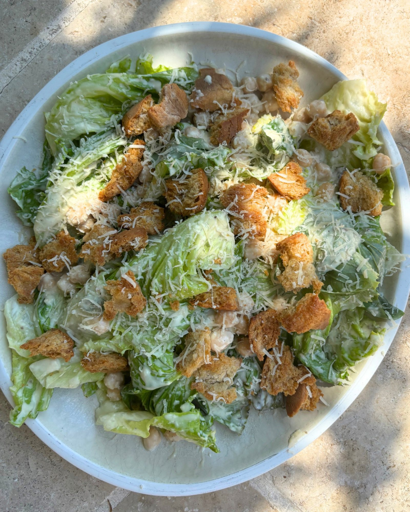

Chickpea Caesar Salad
A Caesar salad with chickpeas in place of the chicken, with baked ciabatta croutons and a creamy anchovy dressing.

Before you start heat the oven to 180°C.
Ingredients
Dressing
Method
- Heat the oven to 180°C.
- Tear the 150g ciabatta into chunky croutons.
- Tumble the croutons onto a baking tray with the 2 tbsp olive oil and a pinch of salt and pepper.
- Bake for 8-10 minutes, turning often so they crisp evenly, until golden.
- Meanwhile, add the 2 anchovies, 1 grated garlic clove, 4 tbsp mayonnaise, 1 tsp Dijon mustard, 20g Parmesan and the juice of 1 lemon to an empty jar or mixing bowl.
- Shake or mix well to combine, then check the seasoning. It should be the consistency of yoghurt — add a splash of water to loosen it if needed.
- Tip the dressing into a large mixing bowl and add the 1 cos lettuce, the drained 660g jar of chickpeas and half the croutons.
- Toss well to coat.
- Tip onto a serving platter, top with the remaining croutons and shave over extra Parmesan.
Notes
This dressing is the shortcut version, built on mayonnaise; a from-scratch Caesar dressing works just as well.
Source: https://boldbeanco.com/blogs/beanspo-recipes/chickpea-caesar-salad